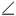
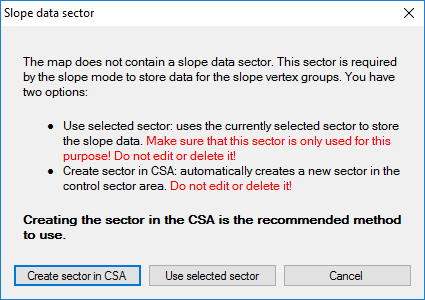
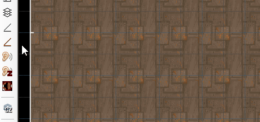
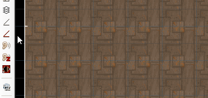
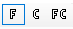
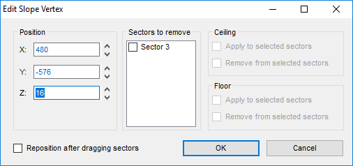

- 绘制斜面模式：绘制斜面定义（斜面顶点组，SVG），它使用 UDMF 扇区属性使扇区倾斜。主要用途是让斜面 3D 地板变得简单，但适用于任何扇区。仅在 UDMF 中可用
- 斜面模式：修改由绘制斜面模式创建的斜面顶点组。仅在 UDMF 中可用
菜单路径：模式 -> 绘制斜面模式
动作类别：3D 地板插件。
默认按键：无。
| 动作 |
默认按键 |
界面按钮 |
说明 |
| 绘制斜面模式 |
无 |
|
让你绘制一个斜面顶点组 |
| 斜面模式 |
无 |
 |
进入斜面模式，让你编辑斜面顶点组 |
| 绘制斜面顶点 |
鼠标左键 |
无 |
绘制一个斜面顶点 |
| 完成斜面绘制 |
鼠标右键 |
无 |
完成斜面顶点组的绘制 |
斜面数据扇区
该插件需要一个
斜面数据扇区来存储描述斜面顶点组的自定义 UDMF 字段。这是撤销/重做所必需的，也能让斜面顶点组在各次制图会话之间保持保存。当你进入绘制斜面模式且未定义
斜面数据扇区时，会弹出一个窗口询问你要做什么。

最简单且推荐的方法是让插件在控制扇区区域中创建
斜面数据扇区。
注意：请不要编辑或删除此扇区，这一点很重要。
绘制斜面模式
绘制斜面模式允许你绘制定义斜面的斜面顶点组。如果有任何扇区被选中，绘制的斜面将分配给它们。
绘制斜面
绘制斜面的方式与绘制几何体类似。你必须始终绘制两个或三个斜面顶点，构成一个斜面顶点组。组中的斜面顶点定义了斜面的平面。
开始绘制斜面时，你会在鼠标光标处看到一个中心为黑色的黄色方块。这是一个
斜面顶点。你可以按下鼠标左键将它放置在任意位置。用第二个以及可选的第三个斜面顶点重复此操作。如果你只想使用两个斜面顶点，可以按下鼠标右键完成绘制。


重要的是要理解，斜面顶点组只定义一个平面——它并不指明是倾斜扇区的地板还是天花板。这也意味着你可以用单个斜面顶点组同时倾斜地板和天花板，这在同时倾斜普通扇区和 3D 地板时会很方便。
在绘制斜面时分配斜面
绘制斜面时，如果你选中了一个或多个扇区，该斜面将立即分配给这些扇区。绘制斜面时，你会在菜单栏中看到三个按钮，分别显示为
F、
C 和
FC。

如果启用了
F（由蓝色边框指示），扇区的地板将被倾斜。如果启用了
C，扇区的天花板将被倾斜。如果开启
FC，扇区的地板和天花板都会被倾斜。
斜面模式
斜面模式让你修改现有的斜面顶点组，并将斜面分配给扇区。
修改斜面顶点
移动斜面顶点
移动斜面顶点与移动普通顶点完全一样——你只需按住鼠标右键拖动它们即可。你也可以选择多个顶点，方法是在按住 Shift 键的同时用鼠标左键点击它们，或者在它们周围绘制一个多选框。所有选中的斜面顶点（以其红色显示）在被拖动时会一起移动，就像任何其他几何体一样。
编辑斜面顶点
将鼠标光标悬停在某个斜面顶点上并点击鼠标右键即可编辑它。这将打开
编辑斜面顶点对话框。

在此对话框中，你可以修改斜面顶点的位置——最主要是它的 Z 位置（高度）。输入框允许使用相对值（例如
++128 表示在当前值上加上 128）。如果选中了多个斜面顶点，会同时修改它们全部。
你还可以向扇区添加或移除斜面，更多内容请参见后续章节。
删除斜面顶点 / 斜面顶点组
你不能删除单个斜面顶点——只能移除整个斜面顶点组。操作方法是将鼠标悬停在斜面顶点组中的某个斜面顶点上，然后按下 Delete 键。